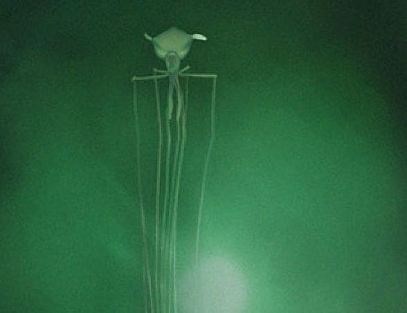

The ocean is a wild place, with some of the most mindboggling sea oddities on our own planet.
As you scroll down, you will dive deeper and deeper into our weird world, learning each of the layers
of the ocean, along with the aliens that inhabit them.
The Epipelagic | 50m-200m
Blue Whale
It's easy to think that the largest animal that ever existed was some dinosaur, but it actually swims in our ocean today.
The blue whale (Balaenoptera musculus) is the largest animal on Earth and is also the largest known species to have ever existed. Here are some key facts about blue whales:
Size: Blue whales can reach lengths of up to 100 feet (30 meters) or more. The heart of a blue whale, the largest known heart of any animal, can weigh as much as a small car.
Weight: Adult blue whales can weigh as much as 200 tons or more. Despite their massive size, these marine mammals primarily feed on tiny shrimp-like animals called krill.
Habitat: Blue whales are found in oceans worldwide, but they tend to prefer colder waters for feeding. They undertake long migrations between their feeding and breeding grounds.
Communication: Blue whales are known for their distinct vocalizations, which include low-frequency moans, pulses, and groans. These sounds can travel long distances underwater and are thought to be a form of communication.
Bobbit Worm
When you're looking for alien-like creatures in the shallow water, it doesn't get weirder than the bobbit worm.
The bobbit worm, also known as the sand striker (Eunice aphroditois), is a predatory marine worm that inhabits the ocean floor in warmer tropical and subtropical waters. Here are some key features and information about the bobbit worm:
Appearance: Bobbit worms are elongated and segmented, with a long, slender body that can reach lengths of up to 10 feet (3 meters) or more, although most specimens are smaller. They are usually brown or mottled in color, providing camouflage in sandy or muddy substrates.
Feeding Behavior: Bobbit worms are voracious predators. They use their sharp mandibles, located at the anterior end of their bodies, to grasp and capture prey. When a potential meal comes close, the bobbit worm strikes with remarkable speed and precision, grabbing the prey and pulling it into its burrow. Their prey includes fish, crustaceans, and other marine organisms.
Habitat: Bobbit worms are typically found in shallow coastal waters, burrowed into the sediment at the ocean floor. They prefer sandy or muddy substrates and use their burrows as ambush sites for capturing prey.
The Mesopelagic | 200m-1,000m
Wolf Eel
This ugly looking eel is more than what meets the eye.
The wolf eel (Anarrhichthys ocellatus), despite its name, is not a true eel but rather a species of fish that belongs to the family Anarhichadidae. Here are some key characteristics and information about the wolf eel:
Appearance: Wolf eels have a distinctive appearance. They have elongated bodies with large heads and sharp teeth. Their bodies are often covered in a mottled pattern of brown, gray, or olive, providing camouflage against rocky underwater environments.
Diet: Their diet consists mainly of crustaceans, mollusks, and small fish. Wolf eels are opportunistic feeders, and their diet can vary based on the availability of prey in their environment.
Habitat: Wolf eels prefer rocky or gravelly substrates and are often found in underwater caves, crevices, or burrows. They use these sheltered areas as hiding spots and for protection.
Japanese Spider Crab
This is an absolute unit. We've seen crabs before, but this one makes the list solely for its sheer size and lifespan. In my opinion, this is the most abnormal sea creature in the entire ocean.
The Japanese spider crab (Macrocheira kaempferi) is a species of marine crab that is known for its enormous size and long, spindly legs. Here are some key facts about the Japanese spider crab:
Size: The Japanese spider crab has the largest leg span of any arthropod, and its size can be truly impressive. Adult crabs can have a leg span of up to a whopping 12 FEET (3.7 meters) OR more, making them one of the largest crustaceans.
Lifespan: The lifespan of Japanese spider crabs is estimated to be around 100 years or more, making them one of the longest-lived arthropods.
Feeding: Japanese spider crabs are omnivores and scavengers, feeding on a variety of organisms such as algae, mollusks, small fish, and decaying matter. They use their powerful pincers to crush and tear their food.
Molting: Like other crustaceans, Japanese spider crabs undergo a process called molting, where they shed their exoskeleton to grow. During molting, they are vulnerable to predation, and they often seek shelter until their new exoskeleton hardens.
The Bathypelagic | 1,000m-4,000m
Giant Squid
Here come the true monsters, and we're just getting started. The ocean is unfathomable deep.
The giant squid (Architeuthis dux) is a deep-sea cephalopod mollusk known for its enormous size and mysterious nature. Here are some key facts about the giant squid:
Size: Giant squids are one of the largest known invertebrates, with some individuals reaching lengths of up to 43 feet (13 meters) or more. However, accurate measurements are challenging due to the elusive nature of these creatures.
Appearance: Giant squids have a distinctive appearance with large, round eyes, a sharp beak, and long, tentacle-like arms equipped with suckers. They also have two longer tentacles that can be used for capturing prey.
Diet: Giant squids are believed to be aggressive predators that feed on deep-sea fish and other squid species. Their large eyes are adapted for low-light conditions in the deep ocean, allowing them to spot prey in the darkness.
Battles of The Deep: Sperm whales are known to be one of the few creatures that actively hunt and consume giant squids. Scars on the bodies of some sperm whales suggest that they engage in deep-sea battles with these massive cephalopods.
Deep Sea Sponge
I can't just breeze past the Bathypelagic Zone without mentioning this freak of nature.
To put it simply, the deep sea sponge can mound and grow to the size of a minivan. What's even crazier, is that their life span has been known to cross into the thousands of years.
The Abyssopelagic | 4,000m-6,000m
Viperfish
Don't worry, your blood is safe from this vampire, as it resides way below the surface. However, we only just passed by the wreck of the Titanic.
The viperfish refers to several species of deep-sea fish belonging to the genus Chauliodus. These fishes are known for their fearsome appearance, with long, needle-like teeth and a large mouth. Here are some key features and information about the viperfish:
Size: Viperfish species vary in size, but they are generally small to moderate-sized deep-sea fish, typically ranging from about 20 to 30 centimeters (8 to 12 inches) in length.
Adaptation: Viperfish have evolved to thrive in the extreme conditions of the deep ocean. They possess large eyes that are sensitive to low light levels, allowing them to detect prey in the darkness. Additionally, their elongated body and fins are adapted for efficient movement in the water.
Feeding: Viperfish are carnivorous predators that feed on small fish and crustaceans. Their long teeth are adapted for grasping and holding onto prey, and they have a large stomach to accommodate relatively large meals in their deep-sea environment.
Bioluminescence: Viperfish have photophores (light-producing organs) along their bodies, which they use for bioluminescence. The light helps attract prey and possibly communicate with other viperfish.
Bigfin Squid

Taken straight from a horror film,
the bigfin squid (Magnapinna) is a deep-sea squid known for its distinctive appearance, characterized by long, thin arms and large fins. This enigmatic creature belongs to the family Magnapinnidae within the suborder Oegopsina.
Imagine being a fish down there. It's so dark that adaptation is required, and all you are good for is prey. These tentacles sweep up to 20 feet below, grabbing at anything that could be food. Terrifying.
The behavior of bigfin squids is not well-documented, but they are believed to be slow-moving creatures that drift or swim gently in the deep-sea environment. Their long, delicate arms suggest a strategy for capturing prey, but specific details about their feeding habits are still unknown.
The Hadalpelagic | 6,000m-11,000m (Ocean Floor)
Snailfish
We are way past the point of sunlight, and you can count on one hand the amount of people that have been here.
Snailfish refers to a diverse group of small, deep-sea fish belonging to the family Liparidae. These fish are found in oceans worldwide, particularly in deep-sea environments, and they are known for their adaptability to extreme conditions. Here are some key features and information about snailfish:
Color: Snailfish are often translucent or pale in color, allowing them to blend in with the dimly lit environment of the deep sea. This coloration may help them avoid predation and capture prey.
Adaptation: Snailfish have physiological adaptations that allow them to withstand the high pressures of the deep ocean. Their bodies are often gelatinous, lacking the gas-filled swim bladders found in many other fish.
Deep-sea environments are characterized by low temperatures, and snailfish have evolved to thrive in these conditions. Some species have antifreeze proteins in their blood to prevent ice formation.
Feeding: Snailfish are opportunistic feeders, preying on small invertebrates, crustaceans, and other small fish. Their diet may vary based on the availability of food in their deep-sea habitat.
Who Knows?
I wish I could put more odd creatures down here, but we truly don't know much else that lies this deep because of how hard it is to explore.
We can only imagine the bizzare sea animals that are still waiting to be discovered.